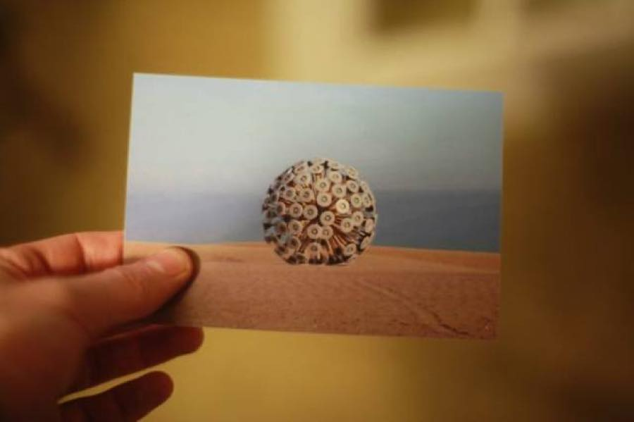

Ensayo

El diamante que es el juego
En la exploración sobre el juego de la infancia está el caudal creativo de hoy. Demuestro esta hipótesis con la historia del diseñador afgano Massoud Hassani. Arranquemos.
›Seguir leyendo
El diamante que es el juego
En la exploración sobre el juego de la infancia está el caudal creativo de hoy. Demuestro esta hipótesis con la historia del diseñador afgano Massoud Hassani. Arranquemos.
Como sé que disponés de poco tiempo, querida lectora y querido lector, te propongo que pongamos manos a la obra y viajemos rápido hacia el pasado y hacia el Este. Imaginá que un tal Massoud tiene seis años. Vive en las afueras de Kabul, Afganistán, en una zona de casas bajas, linderas al desierto.
Hoy Massoud se despertó temprano y el sol del amanecer ya está tiñendo de un naranja tenue la aridez del paisaje que circunda su casa. Mientras su padre, su madre y su hermano duermen, Massoud se sirve un té de menta frío y come una especie de budín de frutos secos que quedó de la noche anterior. Toma y come con una tranquilidad inusual para un niño tan pequeño. Enjuaga el vaso. Ahora lo vemos tirado sobre el piso con las piernas dobladas en L. Sus pies se juntan y se separan al compás de un ritmo propio. Massoud está fabricando un objeto-juguete de papel y lo perfecciona al detalle. ¿Conocés los objetos-juguete de papel? Asumo que no. En la pampa argentina, por dar un ejemplo, jugamos con avioncitos de papel. El viento fuerte es la excepción, sobre todo en la ciudad, claro. En cambio, en otras geografías, la aeorodinámica de los avioncitos fracasa rápido. Esto lo descubrieron los niños hace siglos, y el aprendizaje se ha transmitido de generación en generación.
El juego ya jugado es un diamante poderoso que permite descubrir asociaciones y materiales imaginativos mediante la inmersión profunda en uno mismo.
Ya son casi las nueve de la mañana. El tiempo pasó volando. Es una hora adecuada, piensa Massoud, para tocar la puerta de los hermanos Bahiri y Shahpar, quienes viven a dos casas de distancia. Massoud sale de la suya, las tiras de plástico de las cortina de la puerta quedan inclinadas hacia dentro de la casa, suspendidas, embolsadas por un viento cuyo silbido se escucha a toda hora. Ese silbido va a constiuir la banda de sonido de la vida de Massoud. Esto él todavía no lo sabe. Lo que sí sabe, aunque no tenga las palabras para decirlo, es que el viento es fuente de juego. Y hoy es un día de buen viento. Así que sale a jugar.
Además de Massoud y los hermanos Bahiri y Shahpar, se suman otros niños. El juego consiste en la construcción de objetos de papel para hacerlos traquetear por el suelo seco hasta lograr que vuelen hacia adelante y en línea recta. Los niños se juntan, los arreglan, discuten mejoras. Algunos diseños surfean ráfagas muy bravas y cálidas que en esta época del año azotan el desierto afgano. Shahpar traza con un palo una línea de largada y 1,2,3… sueltan los juguetes de papel al unísono.
Los objetos levantan vuelo y se pierden tierra adentro en la aridez inhóspita y descobijada del territorio. No pueden ir a buscarlos. Esa zona está prohibida porque ejércitos extranjeros y escuadrones paramilitares suelen realizar allí prácticas de guerra. Al irse, dejan desechos, armas que no funcionan y trampas mortales debajo del suelo: minas de muy bajo costo que explotan ni bien alguien las pisa. Los niños se quedan con las manos vacías. Deben juntar desechos, más papel, diseñar y fabricar otra vez.
Permítame lectora, lector, que nos adelantemos en el tiempo exactamente cuatro años. El padre de Massoud muere a causa de un ataque aéreo. Su madre decide emprender la huida del país junto a Massoud, que ahora tiene diez años, y su otro hijo, que ahora tiene ocho. Recalan primero en Rusia, y luego logran anclar en Holanda donde les conceden asilo como refugiados políticos.
Massoud, con esfuerzo, ingresa en la carrera de Diseño. Para el trabajo final debe crear un proyecto original. Su director de tesis le habla de conectarse con su propia esencia, con quien es realmente. “Desde ahí es que se puede crear algo original pues lo único original es el hecho de que la imagen, la idea, tenga origen en vos”, le dice.
La autoexploración lúdica es una práctica complementaria a la investigación de campo. Y puede realizarse durante la primera etapa del proceso creativo.
El viento. Massoud siente el viento. Cierra los ojos y vuelve a jugar con el viento a favor. Hay 110 millones de minas activas en el mundo, y explota una cada 22 minutos, según Naciones Unidas. El costo de desactivarlas es caro y de alto riesgo. La Princesa Diana había tomado el tema como bandera pero luego de esa alta atención pública la problemática cayó en el olvido y en manos de empresas que cobran caro la detonación de minas y contratan mano de obra local para desactivarlas, con los peligros que eso conlleva. La solución de Massoud se llama Mine Kafon y cuesta 60 dólares porque está hecha de desechos plásticos y cañas de bambú. Es un objeto grande que se mueve impulsado por el viento. Va detonando las bombas ocultas que encuentra a su paso. Está construido de forma tal que cuando explota, implosiona sólo uno de sus bastones, pero el objeto entero puede seguir andando para hacer explotar otras minas que encuentre a su paso.
Por un sistema de GPS dentro del juguete detonador, en tiempo real, se puede ir “pintando” el territorio libre de minas. Pasillos que se van ensanchando y la posibilidad de la muerte que se va achicando. Es un prototipo, un artefacto que mezcla arte y la resolución de un problema complejo. Sobre todo es una forma de visibilizar en la agenda global la trampa letal de las minas personales.
El proceso creativo comienza por la exploración divergente y el descubrimiento anclado en una curiosidad fresca que posibilita mirar con otros ojos. A veces, arranca por el contacto con las personas para quienes queremos crear una solución. Este es el primer cuarto del doble diamante.
La persona que tenemos más a mano somos nosotros mismos. Pero a veces resulta difícil desdoblarse para mirarnos con ojos nuevos. En cambio, mirar al niño, a la niña, que fuimos puede resultar más fácil. Entre otras cosas porque está más atrás en el tiempo, más despegado de quienes somos hoy. Podés zambullirte ahí dentro, en esa topografía lúdica y comenzar a cosechar hallazgos.
Una frase del poeta Dylan Thomas siempre resuena en mí a la hora de hablar del poder del juego: “La pelota que arrojé cuando jugaba en el parque aún no ha tocado el suelo”. Es que es muy cierto: El juego libre de la infancia quedó dentro nuestro, quizás agazapado debajo de un pliegue de supuesta adultez. Pero lo importante es que sigue ahí, en estado de latencia. Es un deber: Todo adulto responsable debe encontrar su juego. Puliendo ese diamante hay buen material para trabajar durante el resto de la vida.
[Post Data. Se suele decir que la resolución de problemas es un deporte de equipo. La escritura, a su manera, también es colectiva. Me encantaría recibir comentarios y continuar la conversación — email: ngicovate@gmail.com]